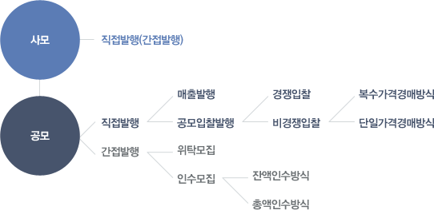

채권시장
채권의 발행시장에서는 자금을 조달하려는 채권발행자는 신규창출한 채권을 투자자에게 직접 매각하거나 또는 전문적인 발행기관에게 전반적인 발행업무를 의뢰하여 이 발행기관이 발행채권을 투자자에게 매출하게 된다.
- 직접발행방식 : 채권발행자를 통해 이뤄지는 방식
- 간접발행방식 : 전문 발행기관을 통해 이뤄지는 방식
| 발행지 |
정부 지방자체특별법에 의해 설립된 법인 그리고 주식회사 등 채권의 신규창출을 통하여 자금을 조달하려는 금융주체 |
| 발행기관 |
채권발행에 대한 제반 업무를 수행하고 발행에 수반된 위험의 판매기능을 담당하는 전문기관 |
| 간사회사 |
채권발행에 대한 사무처리, 발행과 관련된 자문 등 채권발행업무를 총괄하며 인수단을 구성하는 역할을 한다. |
| 인수기관 |
간사회사와 협의하여 발행채권을 직접 매입하는 인수기능을 행함으로써 채권발행자로 하여금 거액의 자금조달은 가능하게 하는 기관들이다. |
| 청약기관 |
인수에 따르는 위험을 부담하는 인수단과는 달리 신규발행채권을 매입하고자 하는 불특정 다수의 투자자들에 대한 청약업무만을 대행한다. 주로 인수업무를 허가 받은 증권사를 통해 이뤄지고 있다. |
채권의 발행방법은 발행채권에 대한 투자자의 대상범위에 따라 사모발행과 공모발행으로 구분된다.
-
사모발행
채권발행자가 직접 소수의 투자자의 사적교섭을 통하여 채권을 매각하는 방법이다. 이경우 주로 은행, 투자신탁회사, 보험회사 등과 같은 기관투자자들이 일반적이며, 발행자는 유동성이 낮은 회사채의 발행기업인 경우가 많다.
-
공모발행
불특정다수의 투자자를 대상으로 채권을 발행하는 방법인 공모는 투자자에게 직접 채권을 매출하는 직접발행과 발행기관을 통한 간접발행방식으로 나누어진다.
직접발행은 발행자가 발행채권의 미발행분에 대한 위험을 모두 부담하는 반면, 간접발행은 발행기관이 발행에 수반된 위험을 일부 또는 전부 부담한다.
| 직접발행 |
매출발행 |
채권의 만기기간, 발행이율, 원리금지급방법등 발행조건을 미리 정한후 일정기간내 개별적으로 투자자에게 매출하여 매도한 금액 전체를 발행총액으로 삼는 방식이다. |
| 공모입찰발행 |
미리발행조건을 정하지 않고 가격이나 수익률을 다수의 투자자들로 부터 입찰 응모를 받아, 그 결과를 기준으로 발행조건을 결정하는 방법이다. 대표적인 채권은 국고채 및 통화안정증권 등이 있다. |
| 간접발행 |
위탁모집 |
발행인이 대리인 자격 또는 발행기관 자신의 명의로 채권을 발행하는 이방 식은 모집 혹은 채권액이 발행하고자 했던 총액에 미치지 못할 경우 아 부분을 발행자가 부담한다. |
| 잔액인수방식 |
발행기관에 의하여 발행자 명의로 된 채권을 모집, 매출하는 것으로 만약 매출 또는 모집액이 발행하고자 했던 총액에 미달할 때는 발행기관이 그 잔액을 책임인수 한다는 계약하에 이루어 지는 채권발행방식이다. |
| 총액인수방식 |
발행채권 통액을 발행기관이 모두 인수한 후 이 기관들의 책임하에 모집 또는 매출하는 방식이다. |
